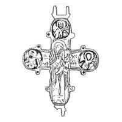

Catalog › CE-1049 · KOR2003-III.1.1.75
Valvă de revers de encolpion cu balama stângă de jos ruptă, imagini standard
sec. mijlocul XII (1101–1200) · loc necunoscut · Muzeul Rus de Stat, Sankt Petersburg (GRM), inv. № ДР/М 1502 (4153)
single valve of a reliquary cross, aramă; c. mijlocul XII (1101–1200); find spot unknown; kept at Muzeul Rus de Stat, Sankt Petersburg (GRM).


Identificare
- Categorie
- Valvă izolată
- Material
- Aramă
- Tehnică
- Turnare în relief; Gravare (incizie); Niello
- Dimensiuni
- Î 80 × L 70 mm
Iconografie
- Descriere revers
- Valvă de revers de encolpion; balamaua stângă de jos este ruptă. Imaginile sunt standard. Nielloul s-a risipit pe alocuri.
- Inscripții
- IC XC/МР ΘҮ; ЛА; ТР
- Limba
- Slavonă
Datare și atribuire
- Datare
- sec. mijlocul XII (1101–1200)
- Centru
- Necunoscut
- Tipologie
- Korzukhina–Peskova 2003, tip III 1 1
Descoperire
- Context
- Colecție (fără context)
Păstrare și referințe
- Colecție
- Muzeul Rus de Stat, Sankt Petersburg (GRM)
- Nr. inventar
- № ДР/М 1502 (4153)
- Bibliografie
- G. F. Korzukhina, A. A. Peskova, Древнерусские энколпионы. Нагрудные кресты-реликварии XI–XIII вв., Sankt-Petersburg, 2003 [Korzukhina–Peskova 2003], p. 109, cat. nr. III 1 1/75, reprodusă la Табл. 58 (planșe, p. 300). Bibliografie citată în sursă: Корзухина, архив ф. 77, д. 15, л. 45.
- Figura
- Табл. 58
- Planșe
- Korzukhina–Peskova 2003, Табл. 58 (planșă fără paginație proprie în PDF; p. 300 tipărită)
- Observații
- Datare după Peskova: sec. mijlocul XII. Inscripții adâncite de ambele părți ale Maicii Domnului în încrucișare: IC XC/МР ΘҮ; în medalioane s-au păstrat doar litere răzlețe: ЛА sus, ТР în dreapta. Desen: G. F. Korzuhina. Inscripții mixte: formule grecești și nume slavone, unele stilizate sau stricate. Coordonate: nu sunt date în sursă.
Citare: Corpus Encolpiorum, CE-1049, Valvă de revers de encolpion cu balama stângă de jos ruptă, imagini standard, https://vitaliejosanu1979-ux.github.io/primul-meu-proiect/piese/KOR2003-III.1.1.75/ (accesat 2026-10-17).